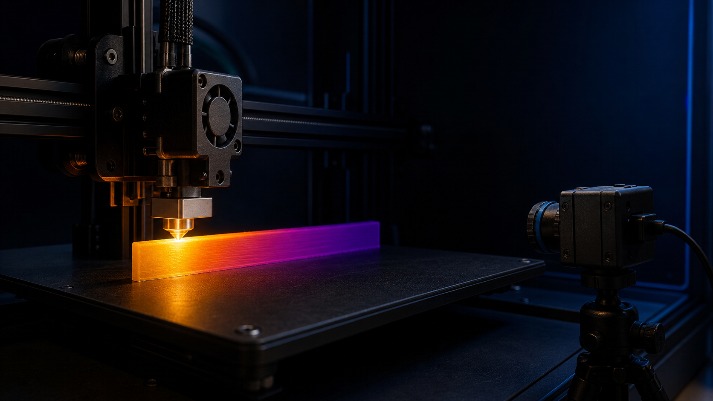

Project / Additive manufacturing research
3D Printing Thermal Analysis
A research space for IR thermography, Python analysis, COMSOL LiveLink simulation, and thermal modeling of FDM filament deposition.

Research direction
Thermal behavior during filament deposition.
This page will hold the detailed CFIP research writeup once the full content pass is ready. Current work centers on spatial temperature profiles, model identifiability, and simulation of cooling during FDM printing.